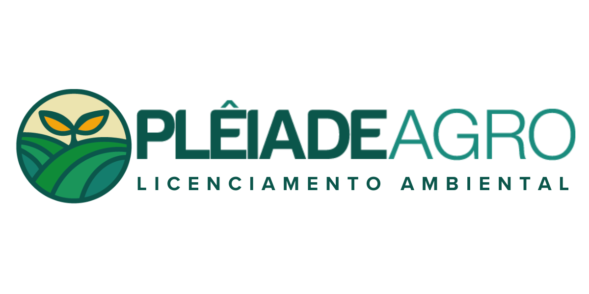

Cadastro multifinalitário ambiental e fundiário das Ordens de Serviço Aura.
Use a árvore de camadas para consultar limites, análises vigentes, bases oficiais e serviços públicos.
Abra uma Ordem de Serviço na árvore e selecione Detalhes para visualizar ou baixar os PDFs vigentes.
Abrir acervo completo no Google DriveEste webmap reúne os limites dos imóveis, análises cartográficas, documentos e produtos vigentes das Ordens de Serviço do contrato.
Consulte titularidade, matrícula, CAR e a matriz de produtos. Cada imóvel é identificado pelo número sequencial e pelo código da OS.
A ficha reúne os produtos vigentes e, quando disponíveis, o pacote SHP e o KML do limite.
Use os controles para localizar, medir e desenhar. “Link desta visualização” preserva o enquadramento e as camadas ativas.

Engº Ambiental · Diretor
Ao solicitar uma correção, informe o número sequencial do imóvel e o código da OS.